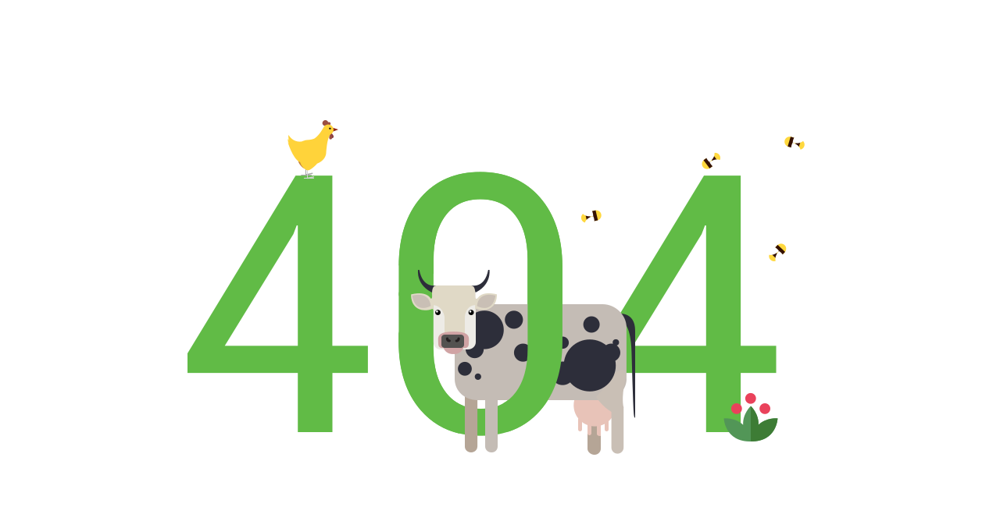

This will be replaced by the content of html-blocks/common/head.html This will be replaced by the content of html-blocks/common/if-ie.html

К сожалению, введенный вами адрес недоступен.
Возможные причины:
Страница удалена (из-за утраты актуальности информации);
Страница перенесена в другое место;
Возможно, при вводе адреса страницы была допущена ошибка.
На главную
This will be replaced by the content of html-blocks/pages--external/footer--external.html